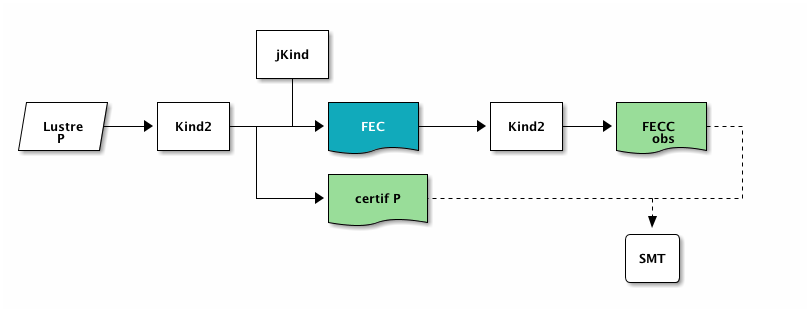

Frontend Certificates for Kind 2
Table of Contents
1 Translation phases in Kind 2
The input program and its properties are expressed in the synchronous language Lustre. However, the certificate we produce considers the program expressed in first order logic. In Kind 2, the Lustre file is first parsed and a number of optimizations and simplifications (slicing, propagation, etc.) are performed on this input. Only after is it translated to an internal representation which is essentially a transition relation in First Order Logic (FOL).
The certification process needs to argue that these optimizations and translations are correct. This can be done by proving once that this translator is correct. For instance, in Coq, this would require to formalize the semantic of Lustre and to show that it is preserved by all simplifications and translations. However, we want to certify the actual program Kind 2. With Coq we could extract some purely functional code to replace the current frontend of Kind 2. This will likely yield not very efficient code, but more importantly it would turn maintaining and improving this frontend into a convoluted process.
Another possibility, which we explore here, is to have this translation phase generate certificates of its own. We describe the kind and format of these certificates in the following. We also evaluate their applicability on a set of benchmarks.
2 Frontend Certificates
Our certification process for the frontend part of Kind 2 is a lightweight one and is constructed with the objective of keeping the whole chain entirely automatic.
Instead of proving semantics preservation between the Lustre input and the internal FOL representation of the transition relation, we prove the observational equivalence of two internal representations independently obtained from the same Lustre input.
To augment our confidence, we don't use two different frontend of Kind 2 but instead rely on a completely different tool1: jKind.
jKind is another SMT based model checker for Lustre systems. As such it parses Lustre files and transforms the given program in a transition relation. jKind is a good candidate because it is sufficiently different from Kind 2. In particular it is written in a different language (Java vs OCaml), does not reuse any code from Kind 2 and is developed independently by different people at Rockwell Collins (mainly Andrew Gacek).
If our certificate is proven valid, then we can conclude that the transition relations constructed by Kind 2 and jKind are observationally equivalent. In our case this means that a set of streams identified as representing the state (at each instant) are the same for both systems. One difficulty, as we will see later on, is to identify this relevant set of variables.
Our idea for such certificates is for them to be a system which observes both the Kind 2 system and the jKind system. The observer system feeds its two subsystems the same inputs and ensure that the property of observational equivalence is respected.
On the figure below, we can see the internal systems generated for Kind 2 and jKind. The state variables are \(X_{1}\) partitioned between the input variables (\(X_{1}^{in}\)) and the output variables (\(X_{1}^{out}\)). The formula describing the initial states is \(I_{1}(X_{1})\) (over the variables \(X_{1}\)) and the transition relation is represented by the formula \(T_{1}(X_{1}, X_{1}')\) that relates the values of the variables before (\(X_{1}\)) and after (\(X_{1}'\)) execution of a step in the system. Here the property is P1 but we don't really care about it if we only want to show the equivalence between the two systems. jKind's internal system is represented by variables and formulas indexed by 2.
2.1 Generation of Frontend Certificate
In the following, we denote by \(\sim\) the equivalence relation we consider between sets of variables. We do not define it precisely yet, but when both sets \(A = \{ a_{1}, ..., a_{n} \}\) and \(B = \{ b_{1}, ..., b_{n} \}\) have the same cardinality and when all \(a_{i}\) and \(b_{i}\) represent the same Lustre stream then \(A \sim B ~\equiv~ a_{1} = b_{1} \ \land\ ... \ \land\ a_{n} = b_{n}\).
The system we create observes the values of variables of its two (Kind 2 and jKind) subsystems. Its set of variables are the (disjoint) union of the variables of the Kind 2 system (\(S_{1}\)) and the jKind system (\(S_{2}\)).
\[ X_{obs} = X_{1} \uplus X_{2} \]
The system in itself is \(S_{obs} = (I_{obs}, T_{obs})\) where the initial states are those where \(S_{1}\) and \(S_{2}\) are in their initial states and they are fed the same input values:
\[ I_{obs}(X_{obs}) = X_{1}^{in} \sim X_{2}^{in} \ \land\ I_{1}(X_{1}) \ \land\ I_{2}(X_{2}) \]
Similarly, the transition relation executes simultaneously a step of \(S_{1}\) and a step of \(S_{2}\), feeding the same input variables (primed in this case):
\[ T_{obs}(X_{obs}, X_{obs}') = X_{1}^{in\prime} \sim X_{2}^{in\prime} \ \land\ T_{1}(X_{1}, X_{1}') \ \land\ T_{2}(X_{2}, X_{2}') \]
The property that this system must guarantee (if \(S_{1}\) and \(S_{2}\) are indeed observationally equivalent) is that a defined subset of variables must take the same values in every steps:
\[ P_{obs}(X_{obs}) = X_{1} \sim X_{2} \]
We call this system a frontend certificate (FEC), it is depicted on the right of the following figure.
{kind=link}
Figure 1: Generation and verification of frontend certificates
2.2 Verification of Frontend Certificates
We can remark that this FEC is nothing more that a (reactive) system whose property is a safety property. In fact this is exactly the kind of system that can be analyzed by Kind 2. This is why we propose to use Kind 22 to verify its own intermediate FEC.
The important aspect of our process is that the observer system is not written in Lustre, but rather is expressed directly as a transition system relating state variables and their primed values. The FEC produced by Kind 2 is directly dumped in a format that is very close (with a one-to-one correspondence) to the internal transition system. This allows us to bypass completely Kind 2's frontend on the run of the FEC. To trust the FEC verification, it is sufficient to use the traditional certificate generated by Kind 2 (see Figure 1).
The certificate generated by this second run of Kind 2 is an SMT2 file that guarantees the observational equivalence between the Kind 2 system and the jKind system holds. We call this other certificate the Frontend certificate certificate (FECC).
2.3 Easier Frontend Certificates
The observational equivalence will be proven if it is k-inductive or if PDR manages to strengthen to an inductive invariant. This is not necessarily the case if, for instance, the variables cannot be mapped back to their equivalents in the other model checker. If an error is made then the equivalence might not hold, but we should make sure that variables appearing in the properties can be related.
The naming in jKind is done after slicing, so variable names are not stable modulo slicing. Ideally, we want to have model checkers name their variables in a way that allows to uniquely identify the original Lustre source streams.
For example, something like
node_call1$line-column$node_call2$line-column$.stream$instant?$.new_name.
The problem is that strict observational equivalence might be too strong of a property in our case. In fact, to guarantee that safety properties are equivalent in two systems then it is sufficient to show that they have the same reachable sets. In reality, we only care about a specific safety property \(P\) of this system, so it is in theory sufficient to show observational equivalence only for this property.
What we are interested in is the equivalence between the properties, i.e. \(P_{1}(X_{1}) \Longleftrightarrow P_{2}(X_{2})\) should hold at every step. Moreover if \(P_{1} = P_{2}\) then the subset of variables that appear in \(P\) should be observationally equivalent.
This means that we extend our relation \(\sim\) to systems as
\(S_{1} \sim S_{2}\) if and only if \(X_{1|P} \sim X_{2|P}\) is a safety property of \(S_{obs}\).
Of course now the chance that this new property be k-inductive in our new system is highly improbable. What we propose here is to have, in addition, all the observational equivalence relations between the other variables. Not as real properties, but rather as aids for the model checker (i.e. as potential invariants).
2.4 Example
The following Lustre model adds two input variables together. The property of interest claims that if both (real) inputs are greater than zero then the result must be greater than zero.
node main (a : real; b : real) returns (c : real); var p1 : bool; let c = a + b; p1 = ((a > 0.0) and (b > 0.0)) => (c > 0.0); --%PROPERTY p1; tel;
The FEC generated by Kind 2 is a file (here
add_two.lus.frontend_certificate.kind2) composed of three systems expressed
in the native input format of Kind 2. The first one is the original Kind 2
system.
;; ------------------------------------------------------------------------ ;; Kind 2 system ;; ------------------------------------------------------------------------ (define-node main ;; State variables (with an extra scope 'jKind') ((transSys.x_is_init_x Bool) (main.a Real :input :for-inv-gen) (main.b Real :input :for-inv-gen) (main.c Real :for-inv-gen) (main.p1 Bool :for-inv-gen)) ;; Initial states (init (and transSys.x_is_init_x (= main.c (+ main.a main.b)) (= main.p1 (=> (and (> main.a 0.0) (> main.b 0.0)) (> main.c 0.0))))) ;; Transition relation (trans (and (not (prime transSys.x_is_init_x)) (= (prime main.c) (+ (prime main.a) (prime main.b))) (= (prime main.p1) (=> (and (> (prime main.a) 0.0) (> (prime main.b) 0.0)) (> (prime main.c) 0.0))))) ;; Callers (the observer system OBS calls this node) (callers (OBS ((transSys.x_is_init_x transSys.x_is_init_x) (main.a OBS.main.a) (main.b OBS.main.b) (main.c OBS.main.c) (main.p1 OBS.main.p1)) (lambda ((X1 Bool)) (X1)))) ;; Original properties (will be ignored for subsystems) (props ((p1 main.p1 :user :8-5))) )
When launched on the file add_two.lus, jKind 2.1 (with a special set of
options) produces the following dump file.
(set-option :produce-models true)
(define-fun T ((%init Bool) ($a$0 Real) ($b$0 Real) ($c$0 Real) ($p1$0 Bool) ($a$1 Real) ($b$1 Real) ($c$1 Real) ($p1$1 Bool)) Bool (and (= $c$1 (+ $a$1 $b$1)) (= $p1$1 (=> (and (> $a$1 (/ 0 10)) (> $b$1 (/ 0 10))) (> $c$1 (/ 0 10))))))
(declare-fun %init () Bool)
(declare-fun $a$~1 () Real)
(declare-fun $b$~1 () Real)
(declare-fun $c$~1 () Real)
(declare-fun $p1$~1 () Bool)
from which we extract the transition relation constructed by jKind.
;; ------------------------------------------------------------------------ ;; jKind system ;; ------------------------------------------------------------------------ (define-node jKind ;; State variables (with an extra scope 'jKind') ((jKind.$a$ Real :for-inv-gen) (jKind.$b$ Real :for-inv-gen) (jKind.$c$ Real :for-inv-gen) (jKind.$p1$ Bool :for-inv-gen)) ;; Initial states (init (and (= jKind.$c$ (+ jKind.$a$ jKind.$b$)) (= jKind.$p1$ (=> (and (> jKind.$a$ 0.0) (> jKind.$b$ 0.0)) (> jKind.$c$ 0.0))))) ;; Transition relation (trans (and (= (prime jKind.$c$) (+ (prime jKind.$a$) (prime jKind.$b$))) (= (prime jKind.$p1$) (=> (and (> (prime jKind.$a$) 0.0) (> (prime jKind.$b$) 0.0)) (> (prime jKind.$c$) 0.0))))) ;; Callers (the observer system OBS calls this node) (callers (OBS ((jKind.$a$ OBS.jKind.$a$) (jKind.$b$ OBS.jKind.$b$) (jKind.$c$ OBS.jKind.$c$) (jKind.$p1$ OBS.jKind.$p1$)) (lambda ((X1 Bool)) (X1)))) )
Finally the FEC contains the observer system OBS constructed as described
above. Its property is to ensure observational equivalence between variables
that compose the original property. These properties start with the prefix
PROPERTY_Observational_Equivalence whereas equalities between other variables
are just here as an aid and start with the prefix
OTHER_Observational_Equivalence.
;; ------------------------------------------------------------------------ ;; Observer system (top level system) ;; ------------------------------------------------------------------------ (define-node OBS ;; State variables (with an extra scope 'OBS') ( ;; Kind2's state variables (transSys.x_is_init_x Bool) (OBS.main.a Real :input :for-inv-gen) (OBS.main.b Real :input :for-inv-gen) (OBS.main.c Real :for-inv-gen) ;; jKind's state variables (OBS.main.p1 Bool :for-inv-gen) (OBS.jKind.$a$ Real :for-inv-gen) (OBS.jKind.$b$ Real :for-inv-gen) (OBS.jKind.$c$ Real :for-inv-gen) (OBS.jKind.$p1$ Bool :for-inv-gen)) ;; Initial states (init (and transSys.x_is_init_x ;; inputs are the same for Kind2 and jKind (and (= OBS.main.a OBS.jKind.$a$) (= OBS.main.b OBS.jKind.$b$)) ;; initial states of Kind2 system (__node_init_main transSys.x_is_init_x OBS.main.a OBS.main.b OBS.main.c OBS.main.p1) ;; initial states of jKind system (__node_init_jKind OBS.jKind.$a$ OBS.jKind.$b$ OBS.jKind.$c$ OBS.jKind.$p1$))) ;; Transition relation (trans (and (not (prime transSys.x_is_init_x)) ;; inputs are the same for Kind2 and jKind (and (= (prime OBS.main.a) (prime OBS.jKind.$a$)) (= (prime OBS.main.b) (prime OBS.jKind.$b$))) ;; one step of Kind2 system (__node_trans_main (prime transSys.x_is_init_x) (prime OBS.main.a) (prime OBS.main.b) (prime OBS.main.c) (prime OBS.main.p1) transSys.x_is_init_x OBS.main.a OBS.main.b OBS.main.c OBS.main.p1) ;; one step of jKind system (__node_trans_jKind (prime OBS.jKind.$a$) (prime OBS.jKind.$b$) (prime OBS.jKind.$c$) (prime OBS.jKind.$p1$) OBS.jKind.$a$ OBS.jKind.$b$ OBS.jKind.$c$ OBS.jKind.$p1$))) ;; Properties to ensure observational equivalence (props ( ;; between variables of original properties (PROPERTY_Observational_Equivalence_1 (= OBS.main.p1 OBS.jKind.$p1$) :generated ()) ;; between other variables (as an aid) (OTHER_Observational_Equivalence_2 (= OBS.main.a OBS.jKind.$a$) :generated ()) (OTHER_Observational_Equivalence_3 (= OBS.main.b OBS.jKind.$b$) :generated ()) (OTHER_Observational_Equivalence_4 (= OBS.main.c OBS.jKind.$c$) :generated ()))) )
The complete FEC is available here.
Now we can verify this FEC and generate a FECC by issuing the command:
$ kind2 --certif --certif_min dicho add_two.lus.frontend_certificate.kind2
We obtain an SMT2 certificate (the FECC) for the properties of the FEC.
$ z3 add_two.lus.frontend_certificate.kind2.certificate.smt2 Checking base case unsat Checking 1-inductive case unsat Checking property subsumption unsat
2.5 Conclusion
With the addition of the frontend certificates (FEC and FECC), we know have
three certificates when using the model checker Kind 2 in certifying mode
(option --certif). The FECC and and the SMT2 certificate for the original
property (P on figure fig:chain) can be verified by SMT solvers (whose output
can be also certified). A summary of our process is depicted in the
following figure.

3 Benchmarks
3.1 Rockwell Collins Benchmarks
We give results on a set of benchmarks provided by Rockwell Collins. For each one we report the following:
- Kind2 time
- the time necessary for Kind 2 to prove (or disprove) all properties
- FEC gen
- the time that was used to generate the frontend certificate
- FEC size
- the size of the FEC in term of the number of equivalence relations to prove
- FEC MC
- the time necessary for the second run of Kind 2 to prove the FEC
- FEC k
- the k at which the properties of the FEC are k-inductive
- FECC gen
- the time to generate the SMT2 frontend certificate certificate
- FECC k, size
- both the k for the FECC and its size (elements in top level conjunction)
- Z3 check
- the time taken by Z3 to check the certificate
- FECC check
- the time taken by the SMT solver to check the final FECC
| Bench | Kind2 time | FEC gen | FEC size | FEC MC | FEC k | FECC gen | FECC k, size | FECC check (z3) |
|---|---|---|---|---|---|---|---|---|
| active-standby.kind.lus | 6.54 | FAIL | ||||||
| add_two.lus | 0.15 | 0.74 | 4 | 0.18 | 1 | 0.02 | 1, 4 | 0.01 |
| bridge_and_torch.lus | 1.04 | 0.80 | 62 | 0.24 | 1 | 0.12 | 1, 62 | 0.05 |
| dfa.lus | 0.16 | 0.73 | 4 | 0.17 | 1 | 0.02 | 1, 4 | 0.01 |
| inv_gen.lus | 0.22 | 0.72 | 3 | 0.16 | 1 | 0.02 | 1, 4 | 0.01 |
| microwave.kind.lus | 2.57 | 1.07 | 46 | 35.7 | 6 | 1.07 | 3, 79 | 0.81 |
| pid.lus | 8.81 | 0.80 | 15 | 0.18 | 1 | 0.04 | 1, 15 | 0.02 |
| pilot_flying.lus | 19.83 | 1.05 | 107 | 0.38 | 1 | 0.24 | 1, 107 | 0.12 |
| simple_counter.lus | 0.16 | 0.73 | 2 | 0.16 | 1 | 0.02 | 1, 4 | 0.01 |
| triangle_peg_impossible.lus | 7.90 | 1.08 | 158 | 1.53 | 1 | 0.42 | 1, 158 | 0.44 |
We remark that on all files, the FEC is inductive excepted for
microwave.lus. The time to generate the FEC, is essentially the time taken by
jKind to dump its first file plus the time to parse it back. On one of these
examples (active_standby.lus) jKind does out of memory so we were not able to
generate an FEC.
Also worth noting is that for three of them, invariants discovery was helpful in speeding up the verification of the FEC (the ones for which the size of the FECC is larger than the size of the FEC).
For the others, all observational equivalence properties have been verified and certified (not only the ones that concern the equivalence property).
Footnotes:
This idea is similar to what is implemented in Prover Certifier
Note that we could use another model checker to verify this FEC, provided it has the adequate frontend to handle arbitrary FOL transition systems.